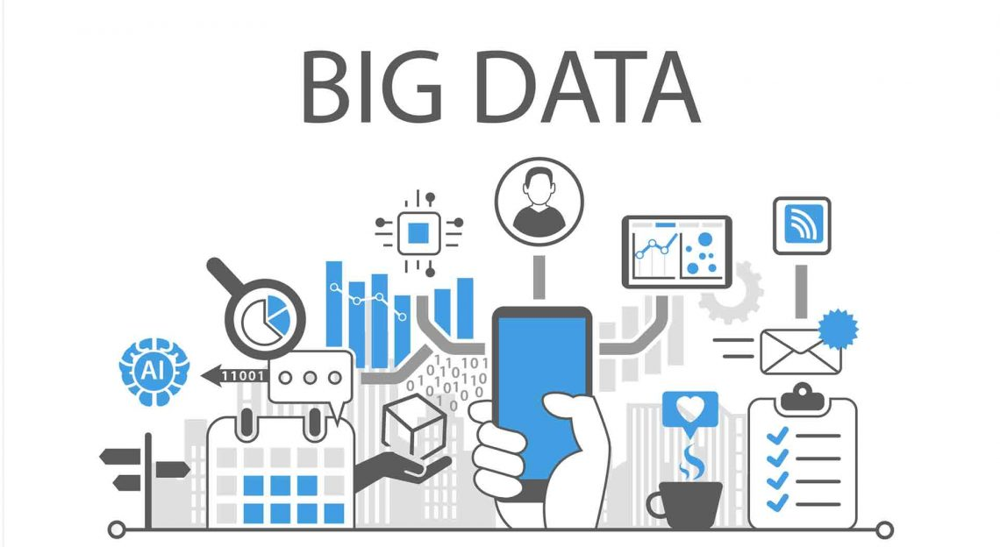

Cyber Security Division berfokus pada pengembangan teknologi untuk melindungi sistem komputer dan jaringan dari ancaman seperti peretasan, malware, dan serangan siber lainnya. Di divisi ini, terdapat beberapa role seperti White Hat, Cloud, dan juga Black Hat. Role ini nantinya akan digunakan untuk simulasi penetrasi dan riset mengenai sekuritas siber yang lainnya.
MBC LABORATORY | We Attack, We Protect.
MBC Laboratory atau kepanjangannya Multimedia Big-Data Cyber Security Laboratory, merupakan sebuah laboratorium riset yang memiliki multi-purpose dalam bidang risetnya. Bidang tersebut meliputi Cyber Security, Big Data, Geographic Information System (GIS), dan Game Tech.Lab ini juga merupakan bagian dari KK NCM atau Kelompok Keahlian Jaringan, Sibernetika dan Manajemen Rekayasa.
Lab MBC secara aktif terlibat dalam penggunaan teknologi-teknologi baru dalam 4 bidang di atas, menciptakan inovasi-inovasi beserta karya yang dapat diimplementasikan secara real-time. Seperti kegiatan bakti sosial untuk mengajar menggunakan teknologi Augmented Reality, game making competition, Capture the Flag, dan lainnnya. Laboratorium ini berada di garis depan penelitian, dengan tujuan mengembangkan teknologi-teknologi Multimeda, Big Data, dan Cyber Security.
Cyber Security
Big Data

Big Data Division berfokus pada pengumpulan, penyimpanan, analisis, dan interpretasi sejumlah besar data yang kompleks. Bagaimana cara menganalisa data dalam jumlah yang besar dan memberikan hasil Analisa beserta komentar dan saran terkait apa yang harus dilakukan berdasarkan data tersebut. Big Data juga berkaitan dengan Machine Learning, AI. Training AI mengenai analisis data dan kepentingan yang beragam.
GIS (Geographic Information System)
Sistem Informasi Geografis (GIS) Division atau Geographic Information System berfokus pada pengembangan dan penerapan teknologi untuk mengumpulkan, menganalisis, dan memvisualisasikan data geografis. Kalau kalian tahu mengenai Google Map dan GPS, GIS menaungi kedua hal tersebut dan juga system informasi yang lainnya. GIS di MBC Laboratorium juga memilik riset tentang Augmented Reality (AR). Bagaimana cara AR bekerja? Penerapannya dalam dunia nyata? Semua itu dipelajari di dalam divisi GIS.
Game Tech!

Game Tech atau GT Division berfokus pada pengembangan dan inovasi dalam desain, pemrograman, dan teknologi yang digunakan dalam pembuatan video game. Disini mereka belajar dan melakukan riset terkait aspek-aspek dari sebuah game. GUI, Sound/Audio, Visual, dan juga Script Game. Secara singkat, mereka mempelajari tentang bagaimana cara membuat sebuah permainan digital dari 0. That's Awesome Isn't It!!